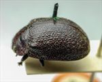
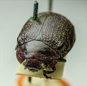
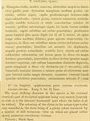

Click on images to enlarge
{kind=link}

Fig. 1. Paropsis solitaria type specimen, lateral view
{kind=link}

Fig. 2. Paropsis solitaria type specimen, anterior view
{kind=link}

Fig. 3. Paropsis solitaria, description
Name
Paropsis solitaria Blackburn, 1896
Corresponds to
Ta20.
Diagnosis and Notes
Blackburn (1896) deals with T. solitaria as part of his subgroup ii (i.e., those species without "strongly marked characters", whose greatest height is not or scarcely in front of the middle of the elytral margin and whose elytra are depressed under the humeral callus). Within that group, he characterises it as:
A. Inner edge of humeral callus distinctly nearer to lateral margin of elytra than to suture;
BB. Sides of prothorax not at all explanate;
C. Elytra not having a well defined transverse wheal-like ridge;
DD. form less wode [not nearly circular]; elytra not wider than long;
EE. prothorax widening from apex almost to base; base much wider than front margin;
F. Puncturation of elytra not particularly fine;
GG. Elytral verrucae not as in tatei [i.e., not large, barely elevated, isolated, black or shiny];
H. Surface of the elytra (disregarding the verrucae) only moderately rugulose;
II. The elytral verrucae very conspicuous and pallid.
This is almost certainly the same species as Ta20 - the dorsal structure with its linear arrangement of relatively large, but smoothly rounded and little elevated, paler-coloured verrucae is effectively identical to typical specimens of Ta20. The A-A/BL, as well as HCE/BL ratios are both within the range of expected values for that species. The black patch on each side of the disc of the pronotum that is present in the type are present on many, though not all, specimens of Ta20.
Type specimen
Location: BMNH
Label data: /“Type” (red-bordered circle)/ “H Vict”/ “6153 T”/ “Blackburn coll. 1910-236.”/ “Paropsis solitaria Blackb.”/.
Female; Size: 10.45 (L) x 7.05 (W) x 4.5 (H) mm; A-A: 1.60 mm; HCE: ~15.6 % (estimated from photo of type specimen). Note that the specimen is actually somewhat smaller than indicated by Blackburn in his description.
Head brown, black anterior to fronto-clypeal suture; pronotum brown, two vague blackish patches either side of centre line, scutellum black; elytra with lots of raised interstices/verrucae that are brown and lighter in colour than punctures; ventrally almost black.
Original description
[Original description shown in figure, translated from Latin using ChatGPT, 03/2026]
♀. Elongate-oval, moderately convex, the greatest height (seen from the side) situated a little behind the middle of the elytral margin; fairly shining; beneath black; head and prothorax brownish-red with darker pitchy shading; elytra pitchy, ornamented with numerous verrucae arranged somewhat in rows, dull testaceous, and with about ten stripes of the same colour; legs and antennae black, the bases of the latter dull testaceous.
Head finely and fairly densely punctured. Prothorax broader than long in the ratio 2⅗ : 1, widened from the apex to well beyond the middle, scarcely transversely impressed behind the anterior margin; on the disc rather finely and somewhat sparsely punctured (towards the sides more densely and more coarsely), sides rather rounded and scarcely flattened; posterior angles rounded.
Scutellum smooth. Elytra rather densely and moderately strongly punctured, somewhat in rows (towards the sides slightly more strongly than on the disc); interstices on the disc slightly rugulose (posteriorly more strongly so); distinctly depressed beneath the humeral callus; marginal portion scarcely distinct from the disc (as in P. sternalis); inner margin of the humeral callus much farther from the lateral margin of the elytra than from the suture.
Basal ventral segment sparsely and finely punctured. Third antennal segment scarcely longer than the fourth. Outer (vertical) portion of the epipleura very little raised.
Length 5 lines (~10.6 mm); width 3⅕ (~6.8 mm) lines.
References
Blackburn, T. 1896, "Revision of the genus Paropsis. Part I", Proceedings of the Linnean Society of New South Wales, vol. 21, no. 4, 637-693 (page 674).
Copyright © 2026. All rights reserved.